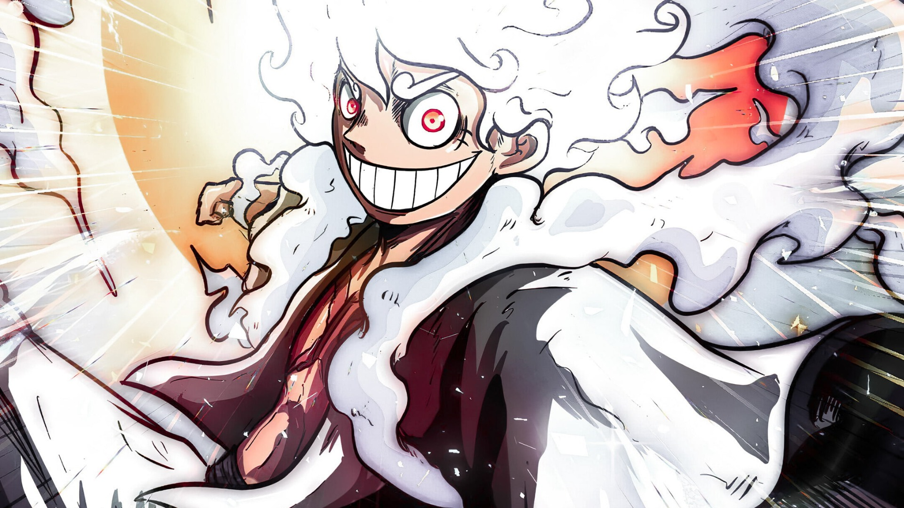

SIDDHARTHA ACADEMY OF HIGHER EDUCATION
THE GRAND LINE ARCHIVES
THE JOURNEY
OF JAVA
Every experiment is another island. Every program, another adventure. The voyage through Java begins here.
12CHAPTERS
24CS281COURSE CODE
AIML B2ND YEAR

自由 / FREEDOMGEAR FIVETHE WARRIOR OF LIBERATION
THE SEA IS CALLING — 2026
SCROLL TO EXPLORE01 / CAPTAIN'S LOG
YOUR ADVENTURE, YOUR RECORD
MEET THE
CAPTAIN.
A personal archive of Java programming lab experiments, collected one chapter at a time. Built for the journey from first program to multithreading.
CREW
MEMBER
MEMBER
CAPTAIN / STUDENT
K NAREN
ROLL NO. 25EU02083
DEPARTMENT AIML B · 2ND YEAR
FACULTY RAMESH SIR
COURSE 24CS281
02 / THE ARCHIVE
YOUR NEXT CHAPTER AWAITS
LAB CHAPTERS
Pick a chapter to open or download the original PDF. Search for an experiment or Java topic across your voyage.
12CHAPTERS
IN THE LOG
IN THE LOG
12 CHAPTERS
No chapters found. Try another search term.
THE TREASURE IS KNOWLEDGE